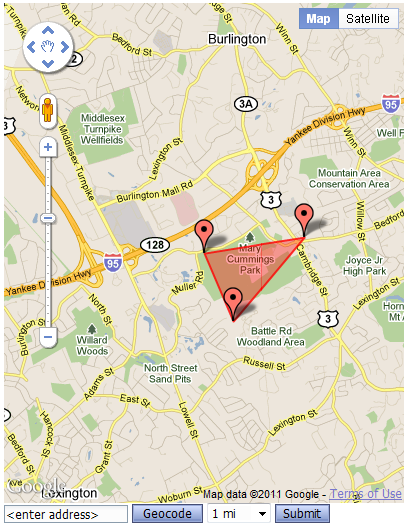
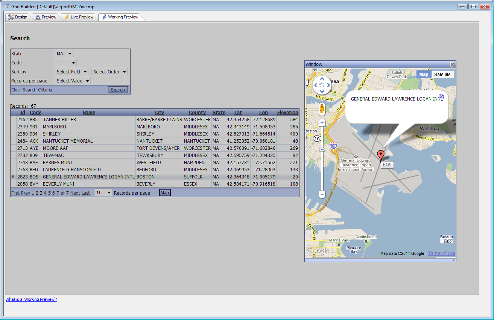
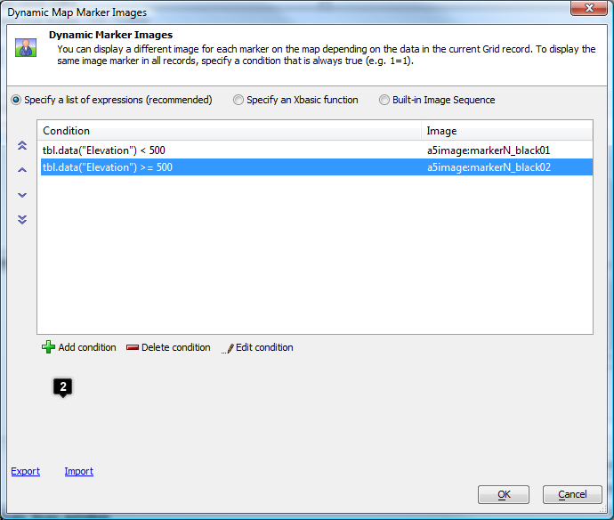
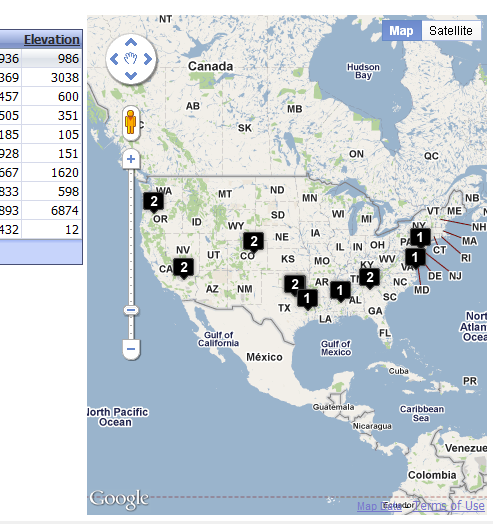
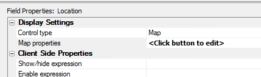
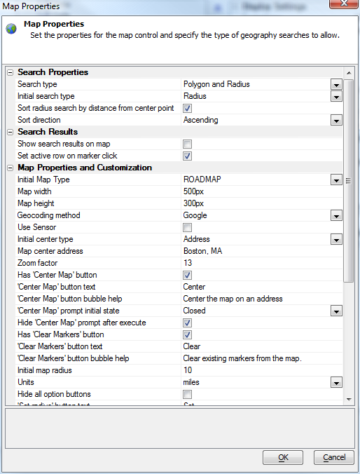

Google Map Component
Optional feature pack, included in subscriptionTable of contents
- Google Map Component
- Introduction
- Creating a Google Map Component
- Setting Google Map Component Properties in the UI
- JavaScript Functions
- Xbasic Functions
- Server-side events
- Client-side events
- Linking a Map to a Grid
- Using a Map as an Alternate Grid View
- Using the Google Map as a Grid search control
- Customizing your Google Map Component
- Google Map Component Action JavaScript actions
- Google Map Component Xbasic Arguments and Properties
- Google Map Component JavaScript Properties and Methods
- Videos
- See Also
Introduction
When you want to present information about location, the best user interface is often a map. In Alpha Five V11, you can use map components in your Web pages as easily as you use grids or dialogs.Our map component depends on the Google Maps JavaScript API
Maps are based on locations, specified by latitude and longitude. In a geographic database, a location is a searchable data type: see Geographic Databases V11.
Determining a latitude and longitude from an address is called geocoding. Determining the user's current position is called geolocation. Our map component uses the free Nominatim
In addition to using the Google Map Component by itself, you can link it to a Grid, place it in a Tabbed UI, place it in a Page Layout component, and call it from Action JavaScript. The Google Map Component works in desktop applications as well as Web applications. The image below is a Google Map Component with default options running in Working Preview mode — i.e., on the desktop.

Creating a Google Map Component
From the Alpha Five Web Projects Control Panel, create a new Web Component, select More Components, select Google Map, and press OK. Switch to the Properties Panel.Setting Google Map Component Properties in the UI
Google Map Properties
| Initial Map Type | The type of Google Map to display. This can be changed by the user using the displayed controls. |
| Use Google Maps Premier | Check this if you have a Google Maps Premier client ID and want to use it |
| Google Maps Premier Client ID | Enter your Google Maps Premier client ID |
| Use SSL for Google Maps Premier | Check this if you want to call Google Maps Premier using SSL (HTTPS:) Note: Google does not allow you to call the Maps API using SSL unless you have a Premier license. |
| Use Sensor | Check this if you want to use a GPS or other geolocation method for any reason. |
| Set Initial Position from Sensor | Check this if you want to use a GPS or other geolocation method (IP geolocation) to set the initial map center. NOTE: We use HTML 5 geolocation, and fall back to any other specified initial position if HTML 5 geolocation is unavailable or the user does not allow the use of her location. On a mobile device, HTML 5 geolocation can have an accuracy of a few meters in the best case, using assisted GPS. On a desktop computer, HTML 5 geolocation tends not to be very accurate. |
| Initial zoom factor | The initial zoom factor on the map. This can be changed by the user using the displayed controls. 0 shows the whole world; 20 shows a few square yards. Displaying a circle will override this setting. |
| Create marker at initial center | Check this if you want a push pin and/or polygon vertex created at the initial map center |
| Initial marker is draggable | Check this if you want the initial push pin to be draggable by the user |
| Show markers | Check this if you want push pins displayed |
| Added markers are draggable | Check this if you want any user-added push pins to be draggable by the user |
| Show polygon | Check this if you want a polygonal area displayed |
| Polygon color | The color used for displaying the Polygon, as hex RGB, e.g. #FF0000 |
| Maximum number of points | The maximum number of markers or vertices to display |
| Show circle | Check this if you want a circle displayed |
| Circle color | The color used for displaying the circle, as hex RGB, e.g. #00FF00 |
| Circle radius | The radius of the circle to display, in meters. 1 mile is roughly 1609 m. Note that displaying a circle resets the map size. |
| Geocoding source | The service to use for geocoding addresses. |
| Reinitialize on Geocode | Check this if you want to reinitialize the map if the user geocodes an address. Otherwise, the geocoded point will be added to the map. |
HTML Properties
| Map Width | The width of the map, e.g. "400px" or "3in" |
| Map Height | The height of the map, e.g. "500px" or "4in" |
| Toolbar HTML | HTML that defines the controls for the toolbar. A default set of controls is provided that you may edit to suit your needs. |
For discussion of the other properties, which the Google Map Component has in common with all custom and user-defined components, see Custom Component Sections and Events V11.
JavaScript Functions
No user-modifiable JavaScript functions have been defined by default in the Google Map Component. This area is a good place to put new JavaScript functions that you want to call from HTML events. Functions created here can use the component's JavaScript methods and properties, and the methods and properties of Google Maps API objects that are stored in the component's JavaScript properties.Xbasic Functions
One user-modifiable Xbasic function has been defined by default.'Sample Callback function -- edit the action to your own purposes
function TakeLatLng as C (e as P)
dim npts as N = val(Request.Variables._npts)
dim radius as C = Request.Variables._radius 'in meters
dim LatLngArray(npts) as C 'e.g. ["(42.478606, -71.201289)",...]
for i=1 to npts
LatLngArray(i) = eval("Request.Variables._LatLng"+(i-1))
next
dim showCircle as L = ("true" = Request.Variables._showCircle)
dim showMarkers as L = ("true" = Request.Variables._showMarkers)
dim showPolygon as L = ("true" = Request.Variables._showPolygon)
'debug(1)
'do something with the values
'for example: pop up a message
TakeLatLng = "true" + radius + "true"+LatLngArray(1)+"alert('radius is "
'for example: do a point-radius search if we're showing the circle, and display results
'for example: do a Polygon search if we're showing the Polygons, and display results
end functionCallback functions can return JavaScript to be executed by the component.
You may also add other Xbasic functions here, both callback functions and functions called from server-side events.
Server-side events
Like user-defined components, the Google Map Component exposes 3 user-modifiable server-side events: onComponentInitialize, onComponentExecute, and onInitialRender, called in that order when the component is first run. When an ajax callback is made, the onComponentExecute event is called.The Google Map Component does all of its server-side initialization in the systemOnInitialRender event, which is called just prior to onInitialRender. You can usefully populate the markerPropertyArray or markerPropertyArrayString inside the onComponentInitialize event, perhaps obtaining your data from a database or a web service. If markerPropertyArrayString has been defined when systemOnInitialRender is run, it is used to populate the JavaScript bulkMarkersArray; if not, then if markerPropertyArray has been defined, it is used to populate the JavaScript bulkMarkersArray.
Do not overwrite e.javascript in the onInitialRender event, or no map will be displayed. You may append your own JavaScript if you wish, e.g. e.javascript = e.javascript + myJS. Similarly, do not overwrite e.html, or the DIV that holds the map will not be created. If you wish to modify the DIV or toolbar HTML, edit the exposed HTML properties.
Client-side events
Like custom and user-defined components, the Google Map Component exposes 3 user-modifiable client-side events:- canAjaxCallback
- afterAjaxCallbackComplete
- onInitializeComplete
Linking a Map to a Grid
Follow this recipe to make a Map pop up to display a location from a Grid row.- Create a new Google Map Component
- Edit the Toolbar HTML and delete everything defined, since we don't want a toolbar
- Change the maximum number of points to 1
- Save the map
- Open your grid
- Add an Action Button
- In the Button Action, Add a new action using Action JavaScript to open a Google Map Component
- Pick the map you just saved
- If your grid has latitude and longitude fields, bind them to the CenterLat and CenterLng arguments
- If your grid doesn't have latitude and longitude fields, but has an address field, bind that to the CenterAddress argument. The address field needs to be complete enough for geocoding.
- Optionally bind the Titles and InfoText arguments to fields you want to appear in the marker's mouseOver and onClick displays
- Set the pop-up window width and height to be a few pixels larger than your map.
- Save the Action Button
- Create a Toolbar Action Button bound to the Action Button you just saved
- Run your grid and adjust your settings to be pleasing

{kind=link}
Note that to get latitude and longitude fields in this grid we used the following Alpha Five Portable SQL expressions:
GeogLatitude(Location) AS Lat, GeogLongitude(Location) AS Lon
If you had separate city, state, and address fields in your database, you could concatenate them in a SQL expression. In general, however, it is best to geocode addresses once and store the location in the database, rather than geocoding them on the fly every time they are viewed.
Using a Map as an Alternate Grid View
In a grid that has latitude and longitude fields:- Check the property "Has Alternate Views"
- Open the builder for the Alternate Views definition.
- Add an Alternate View of type Google Map
- Select the Location type
- Create expressions for Latitude and Longitude
- Optionally create expressions for Title and Info box
- Optionally create a list of expressions for dynamic markers, or select a built-in image sequence for numbered or lettered markers
- In the Main View tab configure how you want the alternate view displayed
- Run the grid and adjust the settings to be pleasing

Locations versus Addresses for marker placement
If you have a table with addresses rather than locations, using it as is will lead to degraded runtime performance for your grid, as each call to geocode an address takes a fraction of a second. This is noticeable but not severe on a web page, since the geocoding happens in asynchronous Ajax callbacks, and all of your addresses can be geocoded in a couple of seconds. It is annoyingly slow when you run a Google Map Component with bulk markers (e.g. for an Alternate View) that are defined by addresses on the desktop or in Working Preview, since the Ajax callbacks for geocoding are serialized: a map with 10 bulk markers defined by addresses can take as long as 10 seconds to initialize, long enough for a user to think it has crashed.We can geocode addresses with the free Nominatim
Google is the geocoding default. Be aware, however, that the free Google Maps API is rate-limited to about 6 geocoding attempts per second, after which it will stop giving answers. In practice, this imposes a limit on the number of rows per page in a grid that uses a map that is based on addresses rather than locations in an alternate view .
If you are a Google Premier Maps customer, check "Use Google Maps Premier," and supply a Google Premier Maps Client ID, then we geocode addresses with Google Maps Premier, which typically returns a geocoded location in 100 ms, even if you selected Nominatum, since Google Premier Maps is so much better and faster than Nominatum. (For $10K a year, it certainly should be better.) If you have a case where this presents a problem, let us know and we'll change the behavior.
If you create a map that takes its initial position from an address using Nominatim for geocoding and use IE 9, don't be surprised if you see a message about the page "accessing information that is not under its control" in Live Preview. You can eliminate the message by loosening IE's permissions for the intranet zone. Specifically, change the security settings for Local Intranet|Custom|Miscellaneous|Access data across domains to Enable from Prompt. Using Google for geocoding does not cause this message to display.
If you plan to deploy a site that uses Nominatim for geocoding and your users plan to use IE 9, you may want to advise them to add your site to the Trusted Sites list.
If you plan to deploy a site that uses Nominatim for geocoding and your users plan to use IE 9, you may want to advise them to add your site to the Trusted Sites list.
If you have a database with addresses that you'd like to be the basis of a Google Map alternate view, consider adding locations to the table as a one-time process using a bulk geocoding operation. If you need to add locations as people enter addresses in your grid, you can use Action JavaScript to geocode the latitude and longitude from the address.
If you need to store Geography location objects in a geography-enabled SQL database for searching purposes, you can use the GeogCreateLocation Portable SQL function to construct the location object from the latitude and longitude, typically in the onBeforeSQLCommandExecute event for INSERT and UPDATE queries.
If you're having trouble getting geocoding to work, test the individual addresses at http://nominatim.openstreetmap.org
Using dynamic markers and labeled marker sequences
If you want a map to communicate some attribute at each location, you can use dynamic markers, meaning that the marker glyph used at any point depends on some expression, such as "sales > 100000" or "population>1000000" or "elevation < 500". This map feature is similar to the conditional image feature of grids. Hover over each picture to see it full size.

If you want to be able to visually connect grid rows with their corresponding markers, you can use labeled marker sequences, and also use marker sequences for the grid images. This behavior is similar to what a business search on Google Maps will show you.

If the number of images in the sequence is smaller than the number of markers to be displayed, any additional markers use the default marker glyph.
See also
Web Grid Alternate Views V11Using the Google Map as a Grid search control
In a grid that is based on a SQL database that has a Geography field, add the Geography field to the search part of the grid and set it to a Map control type. (Hover over each picture to see it full size.)
Open the map properties.

Set the properties and test the control. You can display the results in the grid, in a map that is an alternate view to the grid, and/or in the search grid itself.

See also
Web Grid Geographical Search V11Customizing your Google Map Component
The Google Map Component was designed for several different use cases:- A map around a fixed geographic point specified either by Latitude and Longitude or by Address
- A map displaying a number of fixed geographic points
- A map that allows the user to specify and display the center and radius for a search
- A map that allows the user to specify and display the points defining a polygon for a search
- A map that allows the user to specify and display a search and then see the results of the search
As you have seen, we have already supplied the customization of the Google Map Component for most of these use cases, in conjunction with a Grid. You are, however, free to create your own customizations by using the exposed events, methods and properties, both on the client side and the server side.
Google Map Component Action JavaScript actions
- Clear all markers
- Add marker(s) to the map
- Close all infoboxes
- Open an infobox
- Center map on an address
- Set map zoom level
- Show a marker layer
- Hide a marker layer
- Bounce markers on a layer
- Bounce a marker
Google Map Component Xbasic Arguments and Properties
- Arguments
| Name | DataType | Default Value |
| CenterLat | Numeric | 0.0 |
| CenterLng | Numeric | 0.0 |
| CenterAddress | Character | "" |
| Titles | Character | "" |
| InfoText | Character | "" |
| DivName | Character | "map_canvas" |
- Properties
dim tmpl.DivName as c = default " m around "
dim tmpl.CenterLat as N = default 0
dim tmpl.CenterLng as N = default 0
dim tmpl.markInitialPosition as L = default .T.
dim tmpl.showMarkers as L = default .T.
dim tmpl.showPolygon as L = default .T.
dim tmpl.DivWidth as C = default "');"
dim tmpl.DivHeight as C = default "map_canvas"
dim tmpl.radius as N = default 1609
dim tmpl.maxMarkers as N = default 4
dim tmpl.reinitOnGeocode as L = default .T.
dim tmpl.zoom as N = default 13
dim tmpl.Titles as C = default "400px"
dim tmpl.InfoText as C = default "400px"
dim tmpl.showCircle as L = default .F.
dim tmpl.isDraggable as L = default .T.
dim tmpl.isInitialDraggable as L = default .F.
dim tmpl.CenterAddress as C = default "400px"
dim tmpl.MapTypeId as C = default "500px"
dim tmpl.usePremier as L = default .F.
dim tmpl.clientID as C = default "400px"
dim tmpl.useSSL as L = default .F.
dim tmpl.useSensor as L = default .F.
dim tmpl.markerPropertyArray(0) as P 'see below for properties
dim tmpl.markerPropertyArrayString as C = default "400px"
dim tmpl.autoScaleToBulkMarkers as L = .T.
dim tmpl.bulkMarkerClickAction as C = default ""
dim tmpl.CircleColor as C = default ""
dim tmpl.PolygonColor as C = default ""
dim tmpl.GeocodeDelay as N = default 0
dim tmpl.GeocodeMethod as C = default "ROADMAP" 'could also be "Google"
dim tmpl.GoogleMapsSrc as C
dim tmpl.HtmlToolbar as C
'tmpl.markerPropertyArray Properties:
dim title as c = default "400px"
dim infotext as c = default "400px"
dim type as c = default "400px"
dim icon as c = default "400px"
dim layer as c = default "400px"
dim animation as n = default 0
dim duration as n = default 0
dim callback as C = default "400px"
dim circleObj as p
dim circleObj.radius as n = default 0
dim circleObj.strokeColor as c = default ""
dim circleObj.strokeOpacity as n = default .8
dim circleObj.strokeWeight as n = default 2
dim circleObj.fillColor as c = default ""
dim circleObj.fillOpacity as n = default .35Google Map Component JavaScript Properties and Methods
- Properties (all belong to componentName)
.markersArray = [];
.markersArray2 = [];
.infoWindowsArray = [];
.layersArray = [];
.circlesArray = [];
.geocoder; //only used for google geocoder
.map;
.marker;
.myPoly;
.showMarkers = [showMarkers];
.showPolygon = [showPolygon];
.markInitialPosition = [markInitialPosition];
.myRadius = "{radius}";
.maxMarkers = [maxMarkers];
.reinitOnGeocode = [reinitOnGeocode];
.titles = ["{Titles}"];
.InfoText = ["{InfoText}"];
.myCircle;
.showCircle = [showCircle];
.isDraggable = [isDraggable];
.isInitialDraggable = [isInitialDraggable];
.bulkMarkersArray = [[bulkMarkersArray]];
.autoScaleToBulkMarkers = [autoScaleToBulkMarkers];
.minLat;
.maxLat;
.minLng;
.maxLng;
.bulkMarkerClickAction=[bulkMarkerClickAction];
.GeocodeDelay=[GeocodeDelay];
.GeocodeMethod="{GeocodeMethod}";
.GoogleMapsSrc="{GoogleMapsSrc}";- Methods (all belong to componentName)
//This function is called from the OnInitializeComplete client-side event
//Dynamically load Google Maps API JavaScript, put it at the end of the page
//It will run when the rest of the page has been processed, and
// call back to .initializeGoogleMap()
.loadScript[]
//callback from Google Maps startup
//Geocode or otherwise set the initial map center,
// then chain to initialize2
.initializeGoogleMap[]
//Try to Geocode the supplied address, then chain to initialize2
.encodeAddress[address]
//This function is chained from initialize or encodeAddress
//Set map options, create map object, add map click listener,
// mark initial position if wanted, and create bulk loaded markers
.initialize2[myLatLng]
//addBulkMarkersCallback: add contents of markerArray argument to bulk markers
// API exposed for use by Ajax callbacks; called by initialize2
.addBulkMarkersCallback[markerArray, fClearAllMarkers, fClearBulkMarkers,
fRecenterMapNew, fRecenterMapAll]
//doGeocode: address into LatLng, if we can
// Note that geocoding is asynchronous
.doGeocode[address, title, infotext, icon, rowNumber, layer, animation,
duration, callback, [opt]circleObj]
.doGeocode2[address, canDrag]
.openInfoWindow[index] //index is Xbasic 1-based row number
.addBulkMarker2[lat, lng, title, infotext, icon, rowNumber, layer, animation,
duration, callback, [opt]circleObj]
//addBulkMarker: Add the LatLng marker, with infotext, title, icon, layer,
// animation, duration, callback, and optionally a circle
// Also update bounds
//rowNumber can be used by a defined bulkMarkerClickAction
.addBulkMarker[latlng, title, infotext, icon, rowNumber, layer, animation,
duration, callback, [opt]circleObj]
//reset map bounds to fit all markers if wanted
.autoScaleMap[]
.addMarker2[lat, lng, canDrag]
//Add a marker to the map with a title and InfoText box
//Add a listener for marker drag events
//Show updated polygon if wanted
//Show circle for the first marker if wanted
.addMarker[location, canDrag]
//Attach an InfoText ballon to a specified marker
//Add a listener to the marker to show the InfoText
.attachInfoText[marker, num]
//Geocode the address in the address input box or optional address argument
//If successful, make this the new map center, reinitialize
// the markers, and add this as a new first marker
.encodeAddressField[[opt]address]
//Hide bulk markers in a given layer
.hideLayer[layer]
//Show bulk markers in a given layer
.showLayer[layer]
.bounceLayer[layer, seconds, action]
.bounceBulkMarker[index, seconds, action]
//Remove the markers from the map, but keep them in the array
.clearOverlays[]
//Show any markers currently in the array
.showOverlays[]
//Turn marker displays on or off
.toggleMarkers[]
.deleteBulkMarkers[]
//Delete all markers in the arrays
//also calls .deleteBulkMarkers()
.deleteOverlays[]
//Create and show the polygon defined by the markers
.showPoly[]
//Hide the polygon
.clearPoly[]
//Turn the polygon display on or off
.togglePoly[]
//Show a circle on the map around the center point if wanted
//Fit the map to the bounding box of the circle
.setRadius[value]
//Create a URL-encoded string containing the values to post back to the server
.computePostValues[]
//Perform an Ajax callback to the Xbasic function 'TakeLatLng'
// using computePostValues() to do the heavy lifting
.SubmitLatLng[]
//Ajax callback to do Geocoding
.geoCodeCallback[arg, callback]Videos
- Map Alternate View Videos
- Geography Search Videos
Watch Video - Part 2
See Also
How to bulk geocode addresses in a database V11Geographic Databases V11
Web Grid Alternate Views V11
Web Grid Geographical Search V11